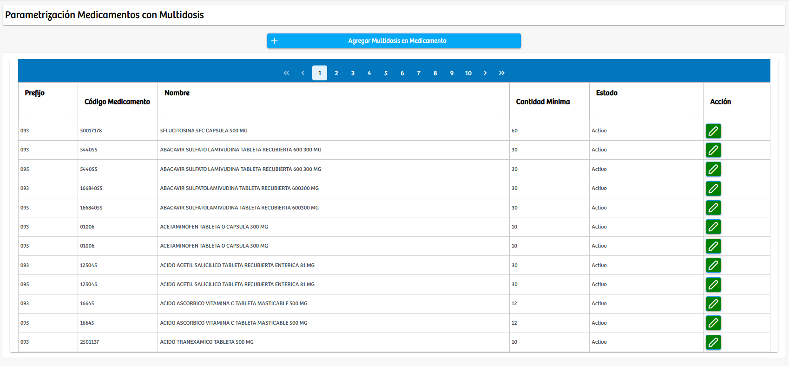
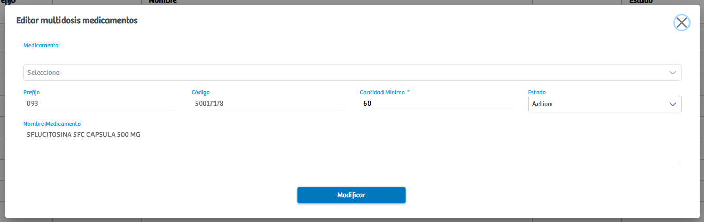
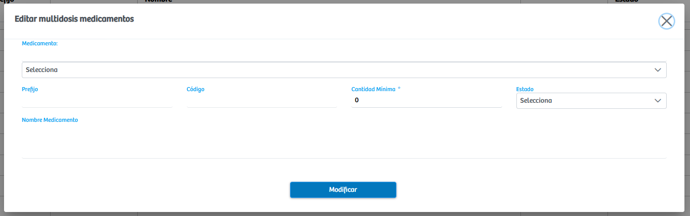

Modulos Sas-Web
Funcionalidades
Parametrizar Medicamentos Multidosis
El módulo Parametrización de Medicamentos Multidosis permite administrar de forma centralizada los medicamentos que requieren manejo por multidosis dentro del sistema. Al ingresar, se presenta una vista estructurada que muestra todos los medicamentos multidosis actualmente registrados, organizados en una tabla que expone datos clave como prefijo, código del medicamento, nombre, cantidad mínima requerida y estado. Esta visualización facilita la consulta rápida y el control operativo de los insumos que requieren parámetros específicos para su dispensación.
Cada registro dispone de una opción de edición, la cual abre un modal donde es posible actualizar información del medicamento seleccionado. En esta ventana se pueden modificar atributos como el medicamento asociado, su prefijo, código, nombre, cantidad mínima exigida para su gestión y el estado del registro. Este mecanismo permite ajustar la parametrización conforme a cambios administrativos, normativos o operativos.
Adicionalmente, el módulo incorpora un botón de Agregar Multidosis en Medicamento, que despliega un modal para crear un nuevo medicamento multidosis. En este formulario se diligencian los datos necesarios para que el sistema reconozca y gestione adecuadamente el medicamento bajo las reglas de multidosis. Esta funcionalidad garantiza que la institución pueda ampliar o actualizar el catálogo de medicamentos parametrizados de manera ágil y controlada
En conjunto, este módulo ofrece una herramienta robusta para el mantenimiento y actualización de los medicamentos multidosis, optimizando la trazabilidad y la administración de insumos dentro del sistema.